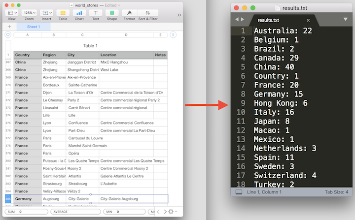

Welcome to the world of programming!
By the end of the last class, you should feel comfortable sitting down to write a script to solve a simple problem or automate a basic task. You will have gained a new skill. It's exciting.
Specifically, our final exercise will be to:

That may seem daunting right now, but I promise you'll be able to do it without breaking a sweat! We'll approach it incrementally and gently, one step at a time. In each session we'll review what we've learned in the previous sessions, so there will always be an opportunity to answer any questions and clear up any confusion.
I'm here to help you gain this new skill. If at any time you have questions or are confused about something, please let me know. We have plenty of time, and I want to make sure everyone has an enjoyable experience.
After taking this class and getting some experience with programming, I encourage you to sign up for the advanced class, "Python for Experience Programmers", where you'll learn how to take your code to the next level.
The principles covered in this first part apply to any programming language, with a few specific twists for Python. Once you understand these, learning any other programming language is a matter of understanding how that language implements the same principles.
For now we'll use the Terminal app to run Python. Terminal is an app that gives you access to the operating system, and it's buried in your Applications folder. The easy way to run it is to use Spotlight to search for Terminal.
Once you have Terminal running, at the prompt just type this and hit return:
python
That will run the Python interpretor provided with Mac OS X. Once Python is running you should see a prompt like this:
>>
You can type Python code after the prompt and hit return to execute the code.
Now that you have Python running, let's get to it!
Today we'll learn about the elements of programming that will prepare you for using any programming language. We'll go very incrementally and try things out as we go along. We have plenty of time! Ask any questions you have, and I'll be happy to make sure you understand everything as we go along.
Variables are a critical part of all programming.
If you've never done any programming, you still might know about variables from math classes. Just like in math, a variable is a name that holds a value; without knowing the actual value, we can reference it by using the name.
In Python, you define a variable simply by assigning a value to it, like so:
spam = 5
That statement creates a variable named spam and assigns the value 5 to it.
Once you've defined a variable, you can use it anywhere you could use the value. For example, we can add numbers together like so:
5 + 20
So we can use our spam variable in the same way in place of the 5:
spam + 20
The result is the same:
25
You can use any name you want for a variable, as long as it doesn't conflict with a name reserved by Python; you'll learn the reserved names as we go along.
You can change the value of an existing variable by assigning a new value to it, like so:
spam = 42
You can also adjust the value of a variable like so:
spam = spam + 3
In that case, Python first does the math operation (42 + 3), then assigns the result to the spam variable. So after this, if you print the value of spam:
print spam
You'll get:
45
It's very common to do something like:
spam = spam + 3
So Python provides a shortcut for this (programmers are lazy, we like shortcuts!), the += operator:
spam += 3
That does exactly the same thing as spam = spam + 3, adding 3 to the existing value of spam. So if spam was 45 and you now print the value of spam:
print spam
You'll get:
48
You can do this with other math operations as well, such as -= to subtract a value from the variable, or *= to multiply the variable by a value:
spam -= 5
spam *= 10
In some programming languages, once a variable has been assigned a number or a string, it can only hold number or string values after that. But in Python that's not the case; in Python you can assign any kind of new value you want to an existing variable.
For example, so far the variable spam has been a number. But we can assign a string to it if we want:
spam = "Monty"
And now spam is that string, so printing it:
print spam
Gives us the string:
Monty
By the way, the += trick works with strings too, so we can do this:
spam += " Python"
And now printing spam gives us:
Monty Python
Now that you know about variables, the next core concept to learn is the function.
Most programming classes don't start by talking about strings, but I've discovered that starting here clears up a lot of potential confusion, especially given Python's somewhat unique approach to strings.
In programming, we refer to text intended to be read by a human as a "string". As in, a string of characters. Given that strings are for communicating with humans, they are not programming instructions, which is where confusion can happen when you are getting started.
Strings are surrounded by quotes, like:
"This is a string of text."
Type that text exactly (including the quotes) at the Python prompt and hit return. You'll see Python print out the text of the string like so:
This is a string of text.
Text surrounded by quotes is a string. Anything not surrounded by quotes is a programming instruction. For example, in Python you can combine strings by adding them together, like so:
"My string " + "another string"
In that case, the text between the quotes are strings, and the + sign, since it's not inside quotes, is a programming instruction. It's code for Python to execute. The result is:
My string another string
If the + sign were inside quotes, Python would treat it as part of a string and not as code. For example:
"My string + another string"
Will print this:
My string + another string
In that case the + is inside the quotes, so it's part of the text and is not code.
Understanding the difference between text inside quotes and code outside of quotes will save you a lot of hassle!
In Python, there's no difference between single and double quotes. You can use either to define a string:
"Double quotes are fine."
'Single quotes are fine.'
In my slides and code you'll see me switch back and forth between double and single quotes based on what I think looks better.
Okay, it's not true that there's no difference between double and single quotes...there is one useful difference.
"If you want to use 'single quotes' as part of your string, you can do so by using double quotes to surround the string."
'If you want to use "double quotes" as part of your string, you can do so by using single quotes to surround the string.'
That's the only difference between using double and single quotes.
The print statement is how you can print text for the user running your script. For example, if you write this code:
print "This is for you, user!"
The print part is code for Python, and the string is what you want printed out. So Python will print out:
This is for you, user!
When printing, you can add strings together if you like using the + command:
print "Here is some text" + "and here is some more text"
This will print:
Here is some textand here is some more text
Later you'll see cases where adding strings together is useful.
Notice that Python adds the strings together exactly as you specified them, so in that case because we didn't have a space after text in the first string or before and in the second string, we got textand.
One way to fix this is to add a space to one of the strings, like so:
print "Here is some text " + "and here is some more text"
Because forgetting the space between strings is such a common mistake, the print statement provides a special way for you to add strings together, using a comma instead of a +:
print "Here is some text", "and here is some more text"
When you add strings together using a comma, the print statement automatically adds a space for you:
Here is some text and here is some more text
This only works as part of a print statement. You can't use a comma to add strings together if you aren't using a print statement.
If you use a + to add strings together, you'll get an error if one of the items is not a string. For example:
print "The answer is: " + 42
Python doesn't allow you to add strings and numbers, so you will get this error:
TypeError: cannot concatenate 'str' and 'int' objects
You'll learn what 'str' and 'int' mean in a bit.
However, when printing a string, if you use a comma, the print statement will turn a non-string item into a string for you. For example:
print "This is my number:", 42
Because we used a comma, print turns the number 42 into a string and adds the strings together with a space between them:
This is my number: 42
And that's everything you need to know about strings for now!
A function allows you to re-use code without having to copy and paste all the code every time you use it. Instead you can just call the function.
Like a variable, a function has a name. Unlike a variable, to call a function you must use parenthesis after the name:
function_name()
So if the function was named beep, you'd call it like so:
beep()
Thankfully, Python doesn't actually have a beep() function! But I'll use the fictional beep() function as an example.
A function doesn't have to accept information from you to work, but most functions do need you to provide information. You provide information as an argument to a function. If a function takes an argument, you pass the arguments inside the parenthesis:
function_name(argument)
You can provide a value such as a string or a number directly. For example, if the beep() function takes an argument specifying the number of times to beep, you can call it like so:
beep(5)
Or you can pass the value using a variable:
count = 5
beep(count)
A function can take multiple arguments, comma-separated:
function_name(argument1, argument2)
A function isn't required to return a value when you call it, but most functions do return information for you to use. If a function returns a value, you can assign the result to a variable:
result = function_name()
Python provides a number of built-in functions you can call, such as the max() function. max() takes as many numbers as you'd like to provide and returns the number that is the highest:
highest = max(5, 200, 1, 0)
print highest
This results in:
200
Calling functions is one of the most common things you will do in programming.
Now you know enough to get into actual programming. Once you have an object that represents a string or number or whatever, you need to be able to do stuff with it. The if statement lets you make choices about what to do based on the value of the object.
As you've seen, a single equals sign assigns a value to a variable:
pet = 'cat'
So now the variable pet is set to the string value cat.
If you use two equals signs, ==, instead of assigning a value, you compare two values. For example, this statement compares the value of pet to the string cat:
pet == 'cat'
Because pet is in fact equal to the value cat, this returns True:
True
If you compare the value of pet to dog:
pet == 'dog'
You get:
False
Now that you know how to compare values, you can use if to do something based on the result. The if statement operates on True and False values, so any operation that returns True or False will work.
An if statement is used like this:
if pet == 'cat':
print "It's a cat!"
Don't worry about the colon or indenting for now, you'll learn about that in a bit.
In that case, if the pet variable is equal to cat, then you'll get:
It's a cat!
If pet is equal to something else, nothing will be printed.
As it happens, some math operations return True or False. For example:
3 > 2
Results in:
True
And this:
3 > 5
Results in:
False
That means that you can use if statements with these operations, such as:
if 3 > 2:
print "3 is still larger than 2!"
If you want to do something if the statement was false, you can use else:
if pet == 'dog':
print "It's a dog!"
else:
print "It's not a dog!"
Since pet is still set to cat, that results in:
It's not a dog!
Sometimes if the first comparison was False, you want to check for another value. You can use elif (which stands for "else if") to do another comparison, like so:
if pet == 'dog':
print "It's a dog!"
elif pet == 'cat':
print "It's a cat!"
That results in:
It's a cat!
You can have as many elif statements as you want.
And you can still use else -- it will only be used if everything else was false, like so:
if pet == 'dog':
print "It's a dog!"
elif pet == 'bird':
print "It's a bird!"
elif pet == 'swallow':
print "It's a swallow!"
else:
print "It's something else, not sure what."
So in this case, because pet is not equal to dog or bird or swallow, you get:
It's something else, not sure what.
Python processes the comparisons in the order you provide them, and stops as soon as one matches. So only one if/elif/else statement will be executed.
Given that if operates on any True/False value, you can also use it with a boolean variable (a variable set to True or False):
monkeys_can_fly = False
if monkeys_can_fly:
print "That's pretty cool!"
else:
print "Too bad. I wish monkeys could fly."
That results in:
Too bad. I wish monkeys could fly.
Now let's talk about those colons and indented lines...
A code block is some code that is grouped together. All languages have code blocks, but Python's handling of them is unique, and is probably the most controversial aspect of the language, because Python uses whitespace significance.
To explain this, we'll start by creating a pet variable:
pet = 'cat'
A code block is indented code, preceded by a line that ends with a colon. All of the indented lines under this if statement are part of the same code block:
if pet == 'cat':
# These indented lines are the code block.
# They are only executed if the if statement is True.
print "It's a cat!"
print "I like cats."
You can't just put a colon after any statement; it must be a statement that supports a code block, such as the if statement.
Every line in a code block must be indented the same way. You can use any indentation you want (a space, three spaces, a tab, a tab and a space, and so on), as long as each line in that code block uses the same indentation. I use tabs for my code blocks, but here's an example of using two spaces:
if pet == 'sloth':
print "I like sloths."
print "They are cool."
Python knows that the code block is closed when it encounters an unindented line or the end of the file. The unindented line is not part of the code block, but closes it:
if pet == 'cat':
print "Lions are cats too."
print "Pretty cool fact."
print "By being unindented, this line closes the code block. It's not part of the block, but
it does close it."
Python will ignore blank lines in the code block; blank lines don't need to be indented and don't close the code block:
if pet == 'cat':
print "Lions are cats too."
print "That blank line didn't close the code block."
print "But this unindented line did close it."
In Python, everything is an object.
In the real world, all objects have values associated with them, such as their color and weight. All objects also have stuff you can do with them, that is, their functionality.
In programming, objects also have values and functionality. We refer to these as an object's attributes and methods.
Like variables, attributes are simply values you can use. Attributes are attached to an object. You access an attribute using dot notation, which is just a fancy way of saying that you put a period and the attribute name after the object:
myobject.attribute_name
For example, to access the number attribute called 'numerator':
answer = 42
print answer.numerator
Like functions, methods are reusable code. Methods are attached to an object. You access a method using dot notation and parenthesis:
myobject.function_name()
For example, to access the number method called bit_length():
answer = 42
print answer.bit_length()
Given that everything in Python is an object, you'll frequently need to find out what you can do with the object you are working with. There are three standalone functions that are particularly helpful for this purpose.
An object has a type -- the name of that kind of object. You can find out the type of any object by calling the type() function and passing the object to it:
answer = 42
print type(answer)
In this case, the result is:
<type 'int'>
In Python, an integer is called an 'int'.
Since everything in Python is an object, you'll often call a function and get an object in return, but you won't know what you can do with it. The dir() method, which stands for 'directory', will tell you the names of all attributes and methods attached to an object:
answer = 42
print dir(answer)
In this case, the result is:
['__abs__', '__add__', '__and__', '__class__', '__cmp__', '__coerce__', '__delattr__',
'__div__', '__divmod__', '__doc__', '__float__', '__floordiv__', '__format__',
'__getattribute__', '__getnewargs__', '__hash__', '__hex__', '__index__', '__init__',
'__int__', '__invert__', '__long__', '__lshift__', '__mod__', '__mul__', '__neg__',
'__new__', '__nonzero__', '__oct__', '__or__', '__pos__', '__pow__', '__radd__', '__rand__',
'__rdiv__', '__rdivmod__', '__reduce__', '__reduce_ex__', '__repr__', '__rfloordiv__',
'__rlshift__', '__rmod__', '__rmul__', '__ror__', '__rpow__', '__rrshift__', '__rshift__',
'__rsub__', '__rtruediv__', '__rxor__', '__setattr__', '__sizeof__', '__str__', '__sub__',
'__subclasshook__', '__truediv__', '__trunc__', '__xor__', 'bit_length', 'conjugate',
'denominator', 'imag', 'numerator', 'real']
All the names that start with an underscore are names you are not supposed to use, they are for the person who implemented the object and are considered private. Annoyingly, dir() both lists these and puts them first, so you have to read through until you find the names that don't start with an underscore to see what you can use.
In this case, 'bit_length' is the first name you can use. Also annoyingly, dir() does not indicate whether the name is for an attribute or method, so you either need to just try using it or look in the documentation. But how do you get the documentation, you ask?
The help() function give you the documentation for an object:
help(myobject)
In the Python interpretor, help() puts you into an interactive help mode (use 'q' to quit help in that case). In a script, help() returns the documentation as text.
For example:
answer = 42
print help(answer)
In this case, the result is:
Help on int object:
class int(object)
| int(x=0) -> int or long
| int(x, base=10) -> int or long
|
| Convert a number or string to an integer, or return 0 if no arguments
| are given. If x is floating point, the conversion truncates towards zero.
| If x is outside the integer range, the function returns a long instead.
...
Sometimes it's helpful to read all the documentation for an object, but often it's too much to slog through and you really just want help on one attribute or method. You can get the help for just that item by using dot notation when you call help():
answer = 42
print help(answer.bit_length)
In this case, the result is:
Help on built-in function bit_length:
bit_length(...)
int.bit_length() -> int
Number of bits necessary to represent self in binary.
>>> bin(37)
'0b100101'
>>> (37).bit_length()
6
You can usually pass an object to help(), but if you pass a string object, help() uses the contents of the string and may give you the wrong response:
mytext = "This is for the crazy ones"
print help(mytext)
In this case, the result is:
no Python documentation found for 'This is for the crazy ones'
You can get the correct help by passing in the type of the object as a string.
For example, in Python a string has the type 'str', so to get the help for a string object:
print help('str')
In this case, the result is:
Help on class str in module __builtin__:
class str(basestring)
| str(object='') -> string
|
| Return a nice string representation of the object.
| If the argument is a string, the return value is the same object.
...
Since everything is an object, when you perform a mathematical operation, what's actually happening is that Python is calling special methods to tell the objects to add themselves together, and they figure out what to do.
So this:
print 10 + 5
Is really two int objects being told to add themselves together. In this case, the result is another int object:
15
The fact that objects know how to add themselves together is why you can add strings:
print "Monty" + "Python"
In this case, the result is another str object:
MontyPython
Some languages let you add strings and numbers together:
print "Hello" + 5
However, Python doesn't allow this:
TypeError: cannot concatenate 'str' and 'int' objects
Python could try and figure out what you want, but the designers of Python prefer clarity and simplicity, and in this case they'd have to guess whether you meant to turn the string into a number, or turn the number into a string. Rather than guess, they require you to specify what you want.
You can do this with the str() and int() functions.
The str() function takes whatever you give it and returns a string version. For example, to get a string equivalent of the 5:
print "Hello" + str(5)
In this case, the 5 is turned into a string and the result is:
Hello5
If you want to get the numerical equivalent of a string, you use int(). However, the string must represent a valid number, or int() returns an error. For example:
print int("Hello")
In this case, the result is:
ValueError: invalid literal for int() with base 10: 'Hello'
But if the string represents a valid number:
print int("42") + 5
The result is:
47
It's actually common to use int(), because any value you read from a file or database will come in as a string, and if you know it represents a number, you'll need to use int() to get the numerical equivalent.
Programming languages usually have something they specialize in. I consider Python to be a language about handling lists. There are many different kinds of lists in Python; for now we'll focus on the most basic list object, conveniently enough called a 'list'.
The most common way to create a list is using square brackets. This creates an empty list object:
animals = []
Since it's an object, we can use dir() to see what attributes and methods it has:
print dir(animals)
This results in:
['__add__', '__class__', '__contains__', '__delattr__', '__delitem__', '__delslice__',
'__doc__', '__eq__', '__format__', '__ge__', '__getattribute__', '__getitem__',
'__getslice__', '__gt__', '__hash__', '__iadd__', '__imul__', '__init__', '__iter__',
'__le__', '__len__', '__lt__', '__mul__', '__ne__', '__new__', '__reduce__', '__reduce_ex__',
'__repr__', '__reversed__', '__rmul__', '__setattr__', '__setitem__', '__setslice__',
'__sizeof__', '__str__', '__subclasshook__', 'append', 'count', 'extend', 'index', 'insert',
'pop', 'remove', 'reverse', 'sort']
Remember that you aren't supposed to use things that start with an underscore, so there are actually just a few items at the end you can use, starting with append().
Use append() to add a single item to the end of a list:
animals.append('cat')
animals.append('frog')
animals.append('bird')
If you now print out the list:
print animals
This results in:
['cat', 'frog', 'bird']
Each item in the list is comma-separated.
If you know what items you want in the list when you create it, you can add them at the same time you create the list:
animals = ['cat', 'frog', 'bird', 'sloth', 'alligator']
To access a particular item in a list, you index into the list.
As humans, we'd naturally consider the first item in a list to be number 1. But almost all programming languages use zero-based indexing, which means the first item is number 0. No matter how much experience you have as a programmer, this is confusing and will result in bugs. Zero-based indexing is probably the biggest cause of bugs in the world.
One hint is the word index. When I mention the index of an entry, remember that indexes start with zero.
You can access an individual item in a list using the index in brackets, like this:
print animals[0]
Since indexes start with zero, this gives the first item in the list:
cat
If you attempt to access an index that is outside the bounds of the list, you'll get an error. So this:
print animals[42]
Results in:
IndexError: list index out of range
It's actually great that in Python you get an error in this case. In traditional programming languages, doing this would give you the value from a random location in memory. Not only did that result in a zillion bugs, but it was probably the most common way that hackers would crack a system; once they knew you were indexing past the end of a list, they'd figure out a way to put their own code in that location and trick you into executing their code.
As far as I know, Python was the first language to support negative numbers for indexes. Negative numbers index from the end of the list.
There is no -0, so to get the item at the end of a list, you use index -1:
print animals[-1]
This results in:
alligator
To get the item second from the end, use -2:
print animals[-2]
To change what is at a particular index, first there must be something at that index or you'll get an error. If there is something there, you can change it by assigning a value to that index like so:
animals[1] = 'swallow'
print animals
This results in the second item being changed:
['cat', 'swallow', 'bird', 'sloth', 'alligator']
Annoyingly, while any function directly related to an object is usually a method attached to that object, there is a major exception. For lists, to get the count of the number of items in the list, you need to call the standalone function len() and pass the list object to it, like so:
count = len(animals)
if count > 2:
print "That's a lot of animals!"
There's a reason for this that I explain in class, but I'm not going to bother typing it out here. However I will mention that Python has a little trap waiting for you: If you look back at the dir() listing for a list, you'll notice an item called 'count' and it's natural to think, "Aha! This will tell me the length of the list!" No, it won't -- count() is a method to tell you how many times a particular item occurs in the list. I wish they'd named it something different or just not included it, because many a person new to Python gets tripped up by it.
You can check whether an item is in the list using the if in statement, like so:
if 'dog' in animals:
print 'Found a dog!'
Just so you can get used to the common ways to use the if statement, here's an example using elif and else as well:
if 'dog' in animals:
print 'Found a dog!'
elif 'bird' in animals:
print 'Found a bird!'
else:
print 'Found nothing!'
To take action if something isn't in the list, you can use the if not in statement, like so:
if 'cow' not in animals:
print "Where's the beef?"
Another feature first introduced by Python is list slicing, which is a way to get a subset of a list. When you index into a list directly, you get just one value. But if you want to get multiple values, you can use slicing. This is done by providing a starting index and an ending index, separated by a colon, like so:
animals = ['cat', 'swallow', 'bird', 'sloth', 'alligator']
print animals[1:4]
Note that the result will go up to the ending index but not include it, so in this case the result is:
['swallow', 'bird', 'sloth']
It can be confusing that the result doesn't include the ending index but just goes up to it. Whenever you aren't sure what you'll get, just subtract the starting index from the ending index, and that's the number of items you'll get in your result.
So in this case we have a starting index of 2 and an ending index of 4:
print animals[2:4]
4-2 = 2, so you get 2 items:
['bird', 'sloth']
It's particularly convenient that if you provide just a starting index and a colon, you'll get everything up to the end of the list without having to know how long the list is:
print animals[2:]
This results in:
['bird', 'sloth', 'alligator']
Similarly, you can get the items starting at the beginning of the list by leaving out the starting index, like so:
print animals[:3]
This results in:
['cat', 'swallow', 'bird']
This is great for when you just want the first N items of a list.
Using negative numbers when slicing lets you do things with the end of the list without knowing how long it is. For example, to get the last three items of the list:
print animals[-3:]
This results in:
['bird', 'sloth', 'alligator']
To get up to the last three items:
print animals[:-3]
This results in:
['cat', 'swallow']
If you directly index an item that doesn't exist, you get an error. But when slicing, Python is more forgiving and does what you mean. So if you ask for the first 10 items in the list and there are only 5 items in the list, it gives you the 5 without generating an error. Asking for the last 5 items in a 3 item list will get you the 3 items, etc. This just proves that the creators of Python love you.
If you have a list, there's a good chance you want to go through all the items in the list, and it would be annoying to have to index the list for every item one at a time. There are various ways you can go through all the items in a list (which is called iterating through a list); the simplest and most used is the for loop.
For each item in a list, the for loop executes the code block you provide to do something with that item.
The syntax of a for loop is a bit more complex than anything else we've dealt with so far:
for variable_name in list_name:
# Your code block here
'list_name' is the name of whatever list you are iterating through, and 'variable_name' is a name you provide that represents the item currently being looked at in the list. A for loop starts a code block, so the line must end with a colon.
Here's an example. We'll use this list of products:
products = ['iPad', 'Watch', 'iMac', 'Music']
This is a for loop operating on the products list:
for spam in products:
print spam
In this case we've provided the variable name 'spam'. I use 'spam' here to make it clear that you can use any name you want. Whatever variable name you use, you can then use that variable name to do something with the current item in the list.
The for loop starts with the first item in the list, in this case 'iPad'. It puts 'iPad' in the spam variable and then runs the code block. Our code block is one simple line that prints whatever the current item is.
When the code block is done, the for loop moves to the next item in the list, in this case 'Watch', puts that item in the spam variable, then runs the code block. And so on up to the end of the list.
In this case, the result is to print each item in the list:
iPad
Watch
iMac
Music
Usually I wouldn't use a variable name like spam (except when I want to annoy my colleagues), I'd use something that reads logically, like 'product':
for product in products:
print product
This does exactly the same thing as the above for loop. The point being that you can use any variable name you want, as long as you use that same name in the code block.
Now that you know how to iterate through a list, let's talk about control flow statements, that is, using continue and break to change how a loop goes through a list.
Sometimes you don't want to process a particular item in the list. In that case, you can use continue to tell the loop you want to move on to the next item.
For our products list, let's say we want to skip any product that starts with an 'i'. The string object has a method called startswith() that we can use:
for product in products:
if product.startswith('i'):
continue
print product
In this case, if the product starts with an 'i', we use continue to move on without printing it out. That means we skip 'iPad' and 'iMac' when printing the list:
Watch
Music
Sometimes you've reached a point where you don't want to process anymore items in the list. In that case, you can use break to tell the loop to stop processing and move on to the rest of the code.
For our products list, let's say we want to stop processing once we hit 'iMac':
for product in products:
if product == 'iMac':
break
print product
print "Done!"
In this case, once we hit 'iMac', the loop stops and the next line of code, that prints "Done!" is executed:
iPad
Watch
Done!
That's everything we're covering for today. It's a huge amount to absorb in one day! Next week we'll start writing scripts that make use of what we've learned here.
These are tutorials and books that I recommend for further learning of Python:
Note that most versions of these have converted to Python 3. The only real difference you will notice is that in Python 3, print is a function, so you have to use parenthesis: print("Parens are hard to remember.").